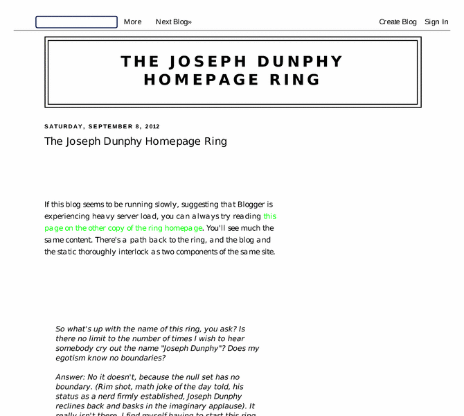

Previewing: Joseph Dunphy's Homering Previewing: Joseph Dunphy's Homering 
Use the left/right red arrow controls to navigate through this ring - Click the preview image to visit the member site.

Just like a homepage, only with more sites. :) A ring of sites I'm putting together on a variety of topics, mainly photography, cooking and mathematics, and maybe you'll get to meet a few of my friends.
Joseph Dunphy's Homering owned by:
 joseph_dunphy_ring joseph_dunphy_ring
A member of the original webring since 01/06/2011.
|
|